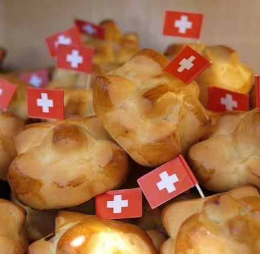
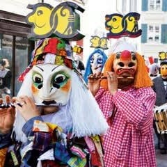
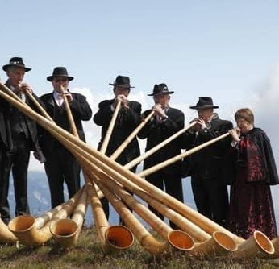

About Switzerland
-

Let's find out
Some Switzerland traditions
Let's learn about some of the most interesting traditions of the people who live in Switzerland.
-

Food
Augustweggli Buns
No doubt that Switzerland is a land of bread. Especially for Swiss National Day, bakeries across Switzerland are decking their shelves with cutesy bread buns sporting tiny Swiss flags. Slightly on the sweet side, these 1. Augustweggli work best for a patriotic breakfast first thing on August 1!
-

Carnival
Fasnacht – Carnival in Basel
The carnival cliques carry 9 ft high transparent lanterns made from wood and canvas. The light inside emphasizes the carved out silhouette of an event that was significant in the past year. It is a tradition that months before Fasnacht the theme is chosen and applied on masks, costumes, and lanterns. On Monday afternoon and Wednesday afternoon the Cliquen march along a planned route through the city, surrounded by spectators. On both nights, people are visiting bars, singing and acting out events of the past year, followed by witty comments, the so-called Schnitzelbängg, or caricatures. On Tuesday evening, masked musicians, the Guggemuusige, fill the streets with their improvised cacophony. Carnival goes on until four o’clock in the morning on Thursday. Then a new year must pass, until the clock strikes four again on the next Ash Wednesday, announcing the new carnival in Basel.
-

Folk traditions
Swiss folk traditions
There are various local festivals in the summer months. Some of them are related to the Leben auf der Alp celebration of Alpine life, celebrated in many places at the beginning of summer with a euphoric ascent of the Alps, while it ends with a festive Alpine descent followed by other events at the end of the summer. In all regions, people celebrate Swiss National Day on 1 August. Speeches are held all over the country with a firework display, parties, flags waving, and the lighting of lanterns and lighthouses in the mountain.If you are a lover of the mountain culture and folklore, you must visit these celebrations and enjoy the cordial mood and delicious regional cuisine. In this period, wrestling tournaments are also being held, along with the traditional costume and yodeling festivals.There you can hear Swiss folk music and the sound of the alphorn instrument, while the passengers are cheering are waving the flags.
-
Isn't
It
Nice 😇